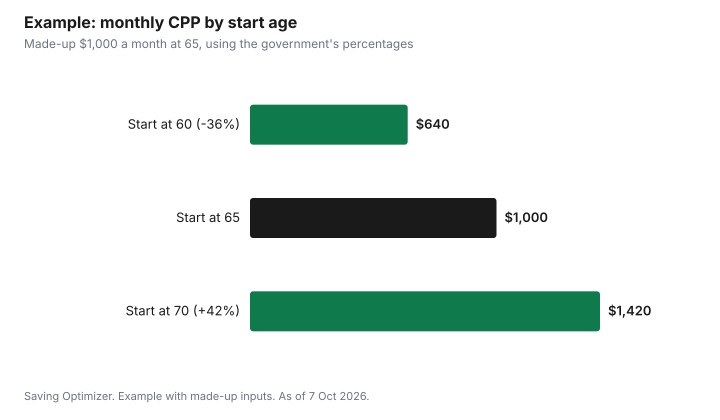

Personal Finance · Canada
CPP at 60, 65 or 70? How the Timing Works, Plus OAS Deferral and the OAS Clawback
Starting CPP at 70 instead of 65 raises your monthly pension by 42%, and starting at 60 cuts it by 36%. The Government of Canada's rules are simple: CPP falls 0.6% for each month you start before 65 and rises 0.7% for each month you wait after 65, up to age 70. OAS can be delayed from 65 to 70 for 0.6% more per month, up to 36%. Waiting pays more each month, but it only pays more in total if you live long enough: in a simple made-up example, starting CPP at 70 overtakes starting at 65 around age 82. Health, other income, and the OAS clawback, which takes back 15% of net income above $93,454 for 2025, are what usually decide the answer.
Key takeaways
- CPP: -0.6% a month before 65 (up to -36% at 60); +0.7% a month after 65 (up to +42% at 70).
- OAS: +0.6% a month for each month you delay after 65, up to +36% at 70.
- Maximum CPP at 65 in 2026: $1,507.65 a month; average at 65: $858.34.
- Maximum OAS for Oct to Dec 2026: $762.50 a month at 65 to 74; $1,037.00 if deferred to 70.
- OAS clawback: 15% of net income above $93,454 (2025) or $95,323 (2026).
- Worked example uses made-up figures.
How CPP timing works
| Start age | Change from age-65 amount | Per month |
|---|---|---|
| 60 | -36% | -0.6% for each month before 65 |
| 62 | -21.6% | -0.6% x 36 months |
| 65 | No change | Standard age |
| 67 | +16.8% | +0.7% x 24 months |
| 70 | +42% | +0.7% for each month after 65 |
There is no benefit to waiting past 70; the government says the maximum monthly amount is reached when you turn 70. The maximum CPP pension at 65 was $1,507.65 a month in January 2026, but the average new pension at 65 in July 2026 was $858.34. Your amount depends on how much and for how long you contributed, so start with your own estimate: sign in to My Service Canada Account and choose "View my benefit estimates", or request your statement of contributions.
If you apply after 65, you can ask for a retroactive start date as early as 11 months before the month your application is received, but no earlier than the month after your 65th birthday.
How OAS timing works
OAS starts at 65 at the earliest. Each month you delay adds 0.6%, up to 36% at 70. The government's table for October to December 2026 shows the maximum monthly OAS pension at each start age:
| Start age | Increase | Maximum monthly amount |
|---|---|---|
| 65 | None | $762.50 |
| 66 | 7.2% | $817.40 |
| 67 | 14.4% | $872.30 |
| 68 | 21.6% | $927.20 |
| 69 | 28.8% | $982.10 |
| 70 | 36% | $1,037.00 |
At 75, OAS rises by another 10%; the maximum for those 75 and over is $838.75 a month for October to December 2026. OAS is indexed to inflation every quarter and never goes down when the Consumer Price Index falls. You need to have lived in Canada for 40 years after age 18 for the full pension; with fewer years you get a partial pension.
Delaying OAS can cost you the GIS
The Guaranteed Income Supplement is for low-income seniors who receive OAS. The government is clear: if you do not receive the OAS pension, you cannot get the GIS, and GIS amounts do not increase when you delay OAS. For someone with low income, delaying OAS usually does not make sense. The GIS maximum for a single person is $1,138.90 a month for October to December 2026, for annual income below $23,112.

The OAS clawback (recovery tax)
If your net world income is above a threshold, you repay 15% of the amount above it, taken from your OAS payments for the following July to June.
| Income year | Repayment period | Clawback starts at | OAS fully repaid at (65 to 74 / 75+) |
|---|---|---|---|
| 2025 | July 2026 to June 2027 | $93,454 | $152,062 / $157,923 |
| 2026 | July 2027 to June 2028 | $95,323 | $155,320 / $161,320 |
The government's own example: with 2025 income of $100,000, the repayment is 15% of $6,546 ($100,000 minus $93,454), or $981.90. CPP payments, RRSP and RRIF withdrawals, pension income, employment income and taxable investment income all count toward net income, so the timing of CPP and RRSP withdrawals can push you over or keep you under the threshold.
A simple break-even (made-up figures)
Assume a made-up CPP pension of $1,000 a month at 65. Applying the government's percentages, it would be $640 at 60 and $1,420 at 70. Ignoring inflation indexing, taxes and investment returns, the totals cross at about these ages:
- 60 vs 65: starting at 60 collects more until about age 74. After that, starting at 65 comes out ahead.
- 65 vs 70: starting at 65 collects more until about age 82. After that, starting at 70 comes out ahead.
Because CPP is indexed to inflation, the bigger later pension also gives more protection against living a long time with rising prices. On the other hand, money taken earlier can be invested, or it can let you leave RRSP savings to grow. The break-even is a starting point, not an answer.
Who might start early, and who might wait
- May start CPP early: people who need the income now, have health concerns, or have little other income and want to avoid debt. The government lists needing to work less or needing the money now as reasons to start earlier.
- May wait: people who are healthy, expect to live long, and have other income or savings to cover the gap. The government lists these as reasons to start later.
- May delay OAS: people still earning high income at 65 who would lose much of their OAS to the clawback anyway, and who are not eligible for the GIS.
- Should usually not delay OAS: people likely to qualify for the GIS.
Couples can also coordinate. For example, the spouse with the larger CPP estimate might delay, or RRSP withdrawals in the early 60s can fund the gap while CPP grows. Our guide to bridging benefits before 65 covers health coverage in those years, and spousal RRSPs and income splitting covers ways to keep taxable income under the clawback threshold.
Steps to decide
- Get your CPP estimate from My Service Canada Account and look up your years of residence for OAS.
- Estimate your net income for each year from 60 to 72, including work, pensions, RRSP or RRIF withdrawals and investments.
- Mark the years where income would be above the OAS recovery tax threshold.
- Decide how you would cover spending if you delay CPP or OAS, and for how long.
- Think honestly about health and family history; they matter more than any formula.
- Revisit the plan each year; you can apply for CPP at any time up to 70.
Worked example (made-up figures)
Lena is a made-up example, and her income figures are invented. She turned 65 in early 2026, is still working, and expects net income of $105,000 in 2026.
- If she takes OAS now, the 2026 threshold of $95,323 means a recovery tax of 15% x $9,677, or about $1,452, which the government's table shows being recovered from OAS between July 2027 and June 2028.
- She plans to retire at 67 with a lower income. Delaying OAS to 67 raises her payments by 14.4% for life and avoids most of the clawback while she is still working.
- Her estimated CPP at 65 is a made-up $1,100 a month. Waiting to 67 raises it by 16.8%, to about $1,285, if her estimate does not otherwise change.
Whether that is right for Lena depends on her health and savings. The government's Canadian Retirement Income Calculator can give her a free projection that combines CPP, OAS and her savings before she decides.
Sources
- Government of Canada, CPP retirement pension: When to start your pension (0.6% and 0.7% a month; 36% and 42%; retroactivity), canada.ca, page modified 2026-10-02, as of 7 Oct 2026.
- Government of Canada, CPP: How much you could receive (maximum at 65, January 2026, $1,507.65; average at 65, July 2026, $858.34; My Service Canada Account estimates; Canadian Retirement Income Calculator), canada.ca, page modified 2026-09-29, as of 7 Oct 2026.
- Government of Canada, Old Age Security: When to start (0.6% a month to 36%; October to December 2026 table; GIS not available without OAS; 40 years for full pension), canada.ca, page modified 2026-10-02, as of 7 Oct 2026.
- Government of Canada, Old Age Security payment amounts (October to December 2026 maximums; 10% increase at 75; GIS maximums; quarterly indexation), canada.ca, page modified 2026-09-29, as of 7 Oct 2026.
- Government of Canada, Old Age Security pension recovery tax (15%; thresholds for 2024, 2025 and 2026 income; $100,000 example), canada.ca, page modified 2026-09-29, as of 7 Oct 2026.
- Base pension amounts, incomes and the person in the worked examples are made up.
Frequently asked questions
How much does CPP go down if I start at 60?
By 0.6% for each month before 65, up to 36% at 60.
How much more do I get if I wait to 70?
CPP rises 0.7% a month after 65, up to 42% at 70. OAS rises 0.6% a month, up to 36% at 70.
What is the maximum CPP in 2026?
$1,507.65 a month at 65 (January 2026). The average new pension at 65 was $858.34 in July 2026.
What is the OAS clawback threshold?
$93,454 for 2025 income and $95,323 for 2026 income. You repay 15% of net income above the threshold.
Should I delay OAS if I qualify for the GIS?
Usually not. You cannot get the GIS without receiving OAS, and the GIS does not increase when you delay.
Is there any benefit to waiting past 70?
No. Both CPP and OAS reach their maximum increase at 70.
Researched and drafted with AI assistance and fact-checked against official Canadian sources. How we create content.
Disclosure: No financial institution or adviser is recommended. There are no affiliate links on this page and no partnership is claimed. Education only, not financial or tax advice.